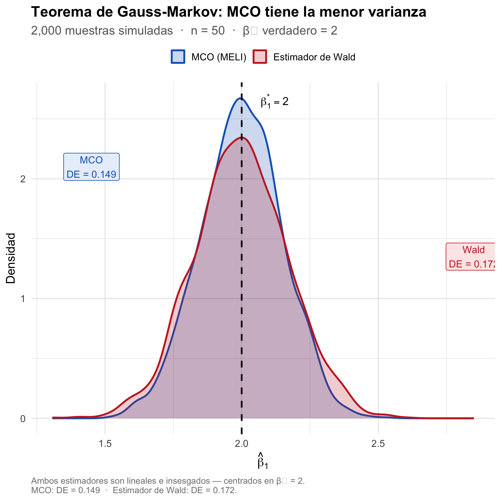
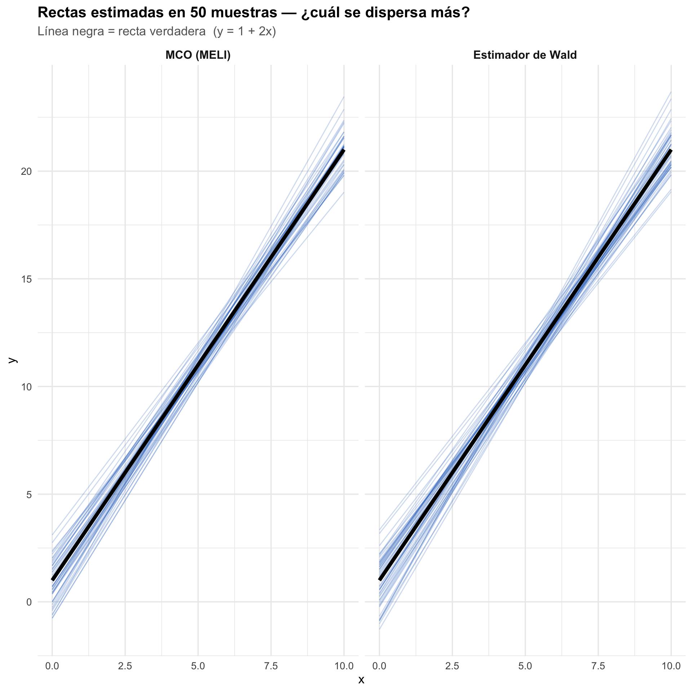

8 Aspectos algebraicos de la solución de MCO
El vector de residuos de MCO: es el vector de residuos evaluado en \(\tilde{\beta}=\hat{\beta}\), que puede escribirse de la siguienteb manera \[\hat{\epsilon}\equiv y-X\hat{\beta}\]
Ecuaciones normales: son las condiciones de primer orden del problema de minimización de la suma de errores al cuadrado. Estas condiciones son: \[X'\hat{\epsilon}=0\label{eq:NormalEq}\] Estas condiciones son las que nos permiten encontrar el estimador de MCO, \(\hat{\beta}\), que minimiza la suma de errores al cuadrado. En otras palabras, las ecuaciones normales son las condiciones necesarias para que el estimador de MCO sea un mínimo local de la función objetivo. Estas condiciones se derivan del hecho de que el vector de residuos de MCO, \(\hat{\epsilon}\), es ortogonal a los regresores \(X\). En otras palabras, las ecuaciones normales son las condiciones necesarias para que el estimador de MCO sea un mínimo local de la función objetivo.
El vector de residuos de MCO es ortogonal a los regresores si y solo si las ecuaciones normales se cumplen. Esto significa que el vector de residuos es ortogonal a los regresores si y solo si la suma de los productos cruzados entre los regresores y los residuos es igual a cero. \[X'\hat{\epsilon}=0\]
Esto implica que el vector de residuos es ortogonal a los regresores, lo que significa que no hay correlación entre los residuos y los regresores. Esta propiedad es fundamental para la validez del estimador de MCO. \[X'(y-X\hat{\beta})=0\label{eq:2}\]
\[X'\hat{\epsilon}=0\]
Esto se puede escribir de la siguiente manera,
\[\frac{1}{n}\sum_{i=1}^{n}x_{i}e_{i}\]
En otras palabras, las ecuaciones normales pueden interpretarse como el análogo muestral de la condición de ortogonalidad, \(E(x_{i}\epsilon_{i})=0\), derivadas del supuesto S2.1 Esta propiedad indica que el término de error estimado \(\hat{\epsilon}\) tiene media cero y no está correlacionado con ninguno de los regresores.
Valores ajustados del modelo (o la predicción según el modelo):
para cada observación \(i\) se define como \(\hat{y_{i}}\equiv x_{i}\hat{\beta}\). El vector de valores ajustado es igual a: \[\hat{y}=X\hat{\beta}\]
Implicaciones
El vector de residuos de MCO puede escribirse como:
\[\hat{\epsilon}=y-\hat{y}\label{eq:al1}\]
Si \(\hat{y}=X\hat{\beta}\) entonces:
\[\hat{y}'\hat{\epsilon}=0\label{eq:al2}\]
\[y'y=\hat{y}'\hat{y}+\hat{\epsilon}'\hat{\epsilon}\label{eq:decomp}\]
Proof. \[\begin{aligned} y'y & = & (\hat{y}+\hat{\epsilon})'(\hat{y}+\hat{\epsilon})\\ & = & \hat{y}'\hat{y}+2\hat{y}'\hat{\epsilon}+\hat{\epsilon}'\hat{\epsilon}\\ & = & \hat{y}'\hat{y}+\hat{\epsilon}'\hat{\epsilon} \end{aligned}\]
Esto es una descomposición de la suma total de cuadrados, \(y'y\), en dos componentes: la suma de cuadrados explicada por el modelo, \(\hat{y}'\hat{y}\), y la suma de cuadrados de los residuos, \(\hat{\epsilon}'\hat{\epsilon}\).
Suma de errores al cuadrado: ya que \(\hat{\epsilon}\) es el vector residual en \(\tilde{\beta}=\hat{\beta}\), la suma de errores al cuadrado es igual a
\[SRC=\hat{\epsilon}'\hat{\epsilon}\]
La varianza del error: es la suma de los errores al cuadrado dividida por los grados de libertad \(n-K\): \[\hat{\sigma}^{2}=\frac{SRC}{n-K}=\frac{\hat{\epsilon}'\hat{\epsilon}}{n-K}\]
Error estándar de la regresión: es la raíz cuadrada de \(\sigma^{2}\). Es una estimación de la desviación estándar de la regresión:
\[\hat{\sigma}=\sqrt{\hat{\sigma}^{2}}=\sqrt{\frac{\hat{\epsilon}'\hat{\epsilon}}{n-K}}\]
Medidas de Bondad de Ajuste:
R2 no centrado:
\[R_{nc}^{2}=1-\frac{\hat{\epsilon}'\hat{\epsilon}}{y'y}\] \[R_{nc}^{2}=\frac{\hat{y}'\hat{y}}{y'y}\]
R2 centrado:
Si el unico regresor es una constante entonces \(\hat{\beta}=\bar{y}\), el promedio de la variable dependiente, lo que implica que \(\hat{y_{i}}=\bar{y}\) para cada \(i\). Entonces, \(\hat{y}'\hat{y}=n\bar{y}^{2}\) y \(\hat{\epsilon}'\hat{\epsilon}=\sum_{i}(y_{i}-\bar{y})^{2}\). Si añadimos más regresores, es necesario calcular el R2 neto del efecto de la constante, por lo tanto podemos modificar la descomposición anterior.
\[\begin{aligned} y'y-n\bar{y}^{2} & = & \hat{y}'\hat{y}-n\bar{y}^{2}+\hat{\epsilon}'\hat{\epsilon}\\ \underbrace{\sum_{i=1}^{n}(y_{i}-\bar{y})^{2}}_{STC} & = & \underbrace{\sum_{i=1}^{n}(\hat{y}_{i}-\bar{y})^{2}}_{SEC}+\underbrace{\sum_{i=1}^{n}\hat{\epsilon_{i}}^{2}}_{SRC} \end{aligned}\]
El coeficiente de determinación o el R2 centrado está dado por la siguiente expresión: \[\begin{aligned} R^{2} & = & 1-\frac{SRC}{STC}\\ & = & \frac{SEC}{STC} \end{aligned}\]
Esta expresión es una medida del poder explicativo de las variables independientes excluyendo la constante. Si los regresores no incluyen la constante y usted calcula el R2 con la formula anterior puede obtener un R2 negativo. En ese caso debe emplear la formula del R2 no centrado, Stata hace el cambio al introducir el comando nocons.
Error muestral: es el error que surge al analizar una muestra en lugar de una población completa. En este caso, es la diferencia entre el coeficiente estimado, \(\hat{\beta}\), y el parámetro poblacional, \(\beta\).
\[\begin{aligned} \hat{\beta}-\beta & = & (X'X)^{-1}X'y-\beta\nonumber \\ & = & (X'X)^{-1}X'\epsilon \end{aligned}\]
Proof. \[\begin{aligned} \hat{\beta}-\beta & = & (X'X)^{-1}X'y-\beta\\ & = & (X'X)^{-1}X'(X\beta+\epsilon)-\beta\\ & = & (X'X)^{-1}X'X\beta+(X'X)^{-1}X\epsilon-\beta\\ & = & \beta+(X'X)^{-1}X\epsilon-\beta\\ & = & (X'X)^{-1}X\epsilon \end{aligned}\]
Propiedades del estimador de MCO en muestras finitas
**Insesgamiento*
El estimador de MCO es:
\[\hat{\beta}=(X'X)^{-1}X'y\]
El estimador de MCO se puede escribir como:
\[\hat{\beta}=(X'X)^{-1}X'\epsilon+\beta\]
Bajo las supuestos A1-A5 este estimador tiene las siguientes propiedades:
El estimador \(\hat{\beta}\) es insesgado: un estimador es insesgado cuando el valor esperado \(\hat{\beta}\) es igual al valor verdadero de \(\beta\). En otras palabras, el estimador \(\hat{\beta}\) es un estimador insesgado de \(\beta\) si la media de su distribución muestral es igual a \(\beta\). Recuerde que la media de la distribución muestral de \(\hat{\beta}\) se conoce como valor esperado de \(\hat{\beta}\) y se escribe \(E[\hat{\beta}]\) . El sesgo en la estimación es simplemente la diferencia entre \(E[\hat{\beta}]\) y \(\beta\). Esta propiedad no significa que \(\hat{\beta}=\beta\). Esta propiedad simplemente dice que si tomamos una muestra un numero infinito de veces, vamos a obtener el valor verdadero en promedio. Para ver esto tomemos el valor esperado de \(\hat{\beta}\), condicionado en \(X\).
\[\begin{aligned} E[\hat{\beta}|X] & = & E[(X'X)^{-1}X'\epsilon+\beta|X]\\ & = & \beta+(X'X)^{-1}X'E[\epsilon|X]\\ & = & \beta \end{aligned}\]
Bajo el supuesto de regresores NO estocásticos, supuesto A5, la demostración es más sencilla,
\[\begin{aligned} E[\hat{\beta}] & = & E[(X'X)^{-1}X'\epsilon+\beta]\\ & = & \beta+(X'X)^{-1}X'E[\epsilon]\\ & = & \beta \end{aligned}\]
Varianza del estimador \(\hat{\beta}\) es igual a \(Var[\hat{\beta}|X]=\sigma^{2}(X'X)^{-1}\)
\[\begin{aligned} Var[\hat{\beta}|X] & = & Var[\hat{\beta}-\beta|X]\\ & = & Var[(X'X)^{-1}X'\epsilon|X]\\ & = & (X'X)^{-1}X'Var[\epsilon|X]X(X'X)^{-1}\\ & = & (X'X)^{-1}X'(\sigma^{2}I_{n})X(X'X)^{-1}\\ & = & \sigma^{2}(X'X)^{-1}X'X(X'X)^{-1}\\ & = & \sigma^{2}(X'X)^{-1} \end{aligned}\]
Para poder estimar la varianza de \(\hat{\beta}\) necesitamos remplazar \(\sigma^{2}\) por su estimador insesgado: \(\hat{\sigma}^{2}=\frac{\hat{\epsilon}'\hat{\epsilon}}{n-K}\) ◻
Demostrar que bajo el supuesto de regresores NO estocásticos la varianza del estimador \(\hat{\beta}\) es igual a \(Var[\hat{\beta}]=\sigma^{2}(X'X)^{-1}\)
Propiedad de mejor estimador lineal insesgado (MELI)
Se dice que \(\hat{\beta}\) es el mejor estimador lineal insesgado (MELI)[^4] de \(\beta\) si cumple las siguientes condiciones:
Es lineal: es una función lineal de una variable aleatoria, y, \(\hat{\beta}=(X'X)^{-1}X'Y\)
Es insesgado: el valor esperado de \(\hat{\beta}\), \(E[\hat{\beta}]\), es igual al verdadero valor del parámetro \(\beta\).
Es eficiente: dentro de la clase de todos los estimadores lineales insesgados \(\hat{\beta}\) tiene la varianza mínima.
Teorema de Gauss Markov
El teorema de Gauss Markov justifica la utilización de los estimadores mínimos cuadráticos, ya que indica que estos estimadores son los “mejores” (más eficientes) dentro de la clase de los estimadores lineales insesgados.
Sea el modelo teórico (modelo poblacional) de regresión \(y=X\beta+\epsilon\). Si los supuestos A1 a A5 (usualmente conocidos como supuestos de Gauss-Markov) se satisfacen, entonces el estimador de mínimos cuadrados ordinarios \(\hat{\beta}=(X'X)^{-1}X'y\) es el mejor estimador lineal insesgado (MELI) de \(\beta\). En otras palabras, el estimador \(\hat{\beta}\) es el mejor estimador (i.e., eficiente o de mínima varianza) dentro de la clase de estimadores que son lineales e insesgados. Esto se puede escribir de la siguiente manera: para cualquier estimador insesgado \(\tilde{\beta}\) que sea lineal en y, \(\hat{\beta}\) tiene menor varianza: \(Var[\tilde{\beta}|X]>Var[\hat{\beta}|X]\).
Dado que \(\tilde{\beta}\) es lineal en y, podemos escribirlo como \(\tilde{\beta}=Cy\), para alguna matriz \(C\), la cual puede ser una función de \(X\). Sea \(D\equiv C-A\) donde \(A=(X'X)^{-1}X'\). Tenemos entonces:
\[\begin{array}{ccl} \tilde{\beta} & = & Cy\\ & = & (D+A)y\\ & = & Dy+Ay\\ & = & Dy+(X'X)^{-1}X'y\\ & = & Dy+\hat{\beta}\\ & = & D(X\beta+\epsilon)+\hat{\beta}\\ & = & DX\beta+D\epsilon+\hat{\beta} \end{array}\label{eq:brd}\]
Si tomamos el valor esperado condicional de \(X\), tenemos que:
\[\begin{aligned} \begin{alignedat}{2}E[\tilde{\beta}|X] & = & E[DX\beta+D\epsilon+\hat{\beta}|X]\\ E[\tilde{\beta}|X] & = & DX\beta+\underbrace{DE[\epsilon|X]}_{(3)=0}+\underbrace{E[\hat{\beta}|X]}_{(4)=\beta}\\ & = & DX\beta+\beta\\ & = & (DX+I_{n})\beta \end{alignedat} \end{aligned}\]
Por lo tanto \(\tilde{\beta}\) es insesgado, \(E[\tilde{\beta}|X]=\beta\), si y solo si \(DX=0\).
La varianza de \(\tilde{\beta}\) es:
\[\begin{aligned} \begin{alignedat}{2}Var[\tilde{\beta}|X] & = & Var[Cy|X]\\ & = & CVar[y|X]C'\\ & = & CVar[X\beta+\epsilon|X]C'\\ & = & CVar[\epsilon|X]C'\\ & = & \sigma^{2}CC'\\ & = & \sigma^{2}(D+A)(D'+A')\\ & = & \sigma^{2}(DD'+DA'+AD'+AA')\\ & = & \underbrace{\sigma^{2}(X'X)^{-1}}_{Var[\hat{\beta}|X]}+\sigma^{2}D'D \end{alignedat} \end{aligned}\]
Tenemos que,
\[Var[\tilde{\beta}|X]=\sigma^{2}[(X'X)^{-1}+DD']\geq\sigma^{2}(X'X)^{-1}=Var[\hat{\beta}|X]\]
Esto es cierto ya que \(DD'>0\).
8.1 Ilustración: MCO vs el estimador de Wald {-}
El teorema de Gauss-Markov afirma que MCO es el mejor estimador lineal insesgado, pero ¿qué tan grande es esa ventaja en la práctica? Para verlo, comparamos MCO con el estimador de Wald: un estimador lineal e insesgado que divide las observaciones en dos grupos según si \(x_i\) está por encima o por debajo de la mediana, y calcula la pendiente como la razón entre las diferencias de medias:
\[\tilde{\beta}_{Wald} = \frac{\bar{y}_{alto} - \bar{y}_{bajo}}{\bar{x}_{alto} - \bar{x}_{bajo}}\]
Este estimador es intuitivo — ¿por qué no simplemente comparar el grupo de \(x\) alta con el de \(x\) baja? — pero desprecia toda la variación dentro de cada grupo. Repetimos el experimento 2,000 veces con el mismo modelo verdadero (\(\beta_1 = 2\)) para ver qué tan concentradas quedan las distribuciones de cada estimador.

Figure 8.1: Distribuci<U+00F3>n muestral de MCO y del estimador de Wald en 2,000 simulaciones. Ambos estimadores son insesgados (centrados en <U+03B2><U+2081> = 2), pero MCO tiene menor varianza <U+2014> exactamente lo que predice el teorema de Gauss-Markov.
La figura lo dice todo: ambas distribuciones están centradas en el valor verdadero \(\beta_1 = 2\) — los dos estimadores son insesgados. Pero la distribución de MCO es más estrecha: sus estimaciones se concentran más alrededor del valor verdadero. En cada muestra posible, MCO se equivoca menos.
🏆 El gran torneo de estimadores
🎮 Haz tu apuesta antes de ver el resultado
Imagina que tomamos 2,000 muestras distintas del mismo modelo verdadero (\(y = 1 + 2x + \varepsilon\), \(n = 50\)). En cada muestra, MCO y el estimador de Wald compiten: el ganador de esa ronda es el que se acerca más al valor verdadero \(\beta_1 = 2\).
¿Cuántas de las 2,000 rondas crees que gana MCO?
Escribe tu número aquí antes de que el profe pase a la siguiente diapositiva: ____
(Opciones de referencia: ¿menos de 1,000? ¿entre 1,000 y 1,400? ¿entre 1,400 y 1,800? ¿más de 1,800?)
Para darte una pista, mira qué tan estables son las rectas de cada estimador muestra a muestra. Cada línea azul es la recta ajustada en una muestra diferente; la línea negra es la recta verdadera (\(y = 1 + 2x\)).

Figure 8.2: Rectas ajustadas en 50 muestras distintas. Cada l<U+00ED>nea azul es una estimaci<U+00F3>n sobre una sola muestra. Las l<U+00ED>neas de MCO se concentran mucho m<U+00E1>s cerca de la recta verdadera (negra).
Resultado del torneo 🏅 — de las 2000 muestras:
| Estimador | Victorias | % |
|---|---|---|
| MCO (MELI) | 1162 | 58.1% |
| Estimador de Wald | 838 | 41.9% |
¿Tu apuesta estaba cerca? Esto no es casualidad: el teorema de Gauss-Markov garantiza que MCO gana más rondas que cualquier otro estimador lineal insesgado.
🧠 Para reflexionar
Mira la figura y discute con tus compañeros:
Insesgamiento. Las dos distribuciones están centradas en \(\beta_1 = 2\). ¿Qué propiedad confirma esto? ¿Por qué un estimador centrado en el valor verdadero en promedio no garantiza que sea bueno en una sola muestra?
Información desperdiciada. El estimador de Wald solo usa la diferencia entre dos grupos. ¿Qué información sobre la relación entre \(x\) e \(y\) está ignorando? ¿Qué pasaría si la relación entre \(x\) e \(y\) fuera muy irregular dentro de cada grupo?
Tamaño de muestra. Si pasamos de \(n = 50\) a \(n = 200\), ¿qué esperarías que le pasara a cada distribución? ¿La brecha entre MCO y Wald desaparecería, se reduciría, o se mantendría proporcionalmente igual?
Los límites del teorema. Gauss-Markov garantiza que MCO es el mejor estimador lineal e insesgado. ¿Podría existir un estimador no lineal con menor varianza que MCO? ¿O un estimador sesgado con menor error cuadrático medio? ¿Qué implicaría eso para la práctica?
📘 Preguntas de repaso
¿Cuáles son las hipótesis y las conclusiones del teorema de Gauss-Markov?
Explique por qué cada una de las hipótesis es importante y qué significa que un estimador sea lineal, insesgado y mejor.Para cada uno de los siguientes casos, especifique qué hipótesis se está violando y cuáles son las consecuencias sobre las conclusiones del teorema de Gauss-Markov:
- \(E\big[(y_{i}-\bar{y})^{2}\big] = X_{i}^{2}\)
- \(X_{i} = \big[ 1, X_{1i}, X_{2i}, X_{1i} \cdot X_{2i} \big]\)
- \(X_{i} = \big[ 1, X_{1i}, X_{2i}, X_{1i} - X_{2i} \big]\)
- \(U_{i}\) se distribuye lognormal con media \(\mu\) y varianza \(\sigma_{U}^{2}\)
- \(U_{i} = Z_{i} + \kappa_{i}\), con
\(E[Z_{i} \mid X_{i}] = c\) y \(E[\kappa_{i} \mid X_{i}] = 0\)
- \(E\big[(y_{i}-\bar{y})^{2}\big] = X_{i}^{2}\)
¿Un cambio en la unidad de medida de la variable dependiente modifica el coeficiente de determinación \(R^{2}\)?
¿Un cambio en la unidad de medida de los regresores afecta el \(R^{2}\)?
Ayuda: compruebe si el cambio afecta el numerador y/o el denominador en la definición de \(R^{2}\).
Recuerde que el supuesto S2 es que \(E(x_{i}\epsilon_{i})=0\).↩︎